System Initiative (SI) was an infrastructure automation platform where engineers could model cloud infrastructure in safe simulations. The first iteration was a drag-and-drop interface, to which engineers were resistant to.
Modeling infrastructure in a simulation would bring more confidence and control to engineers. However, the interface seemed so complex that many didn’t even want to try.
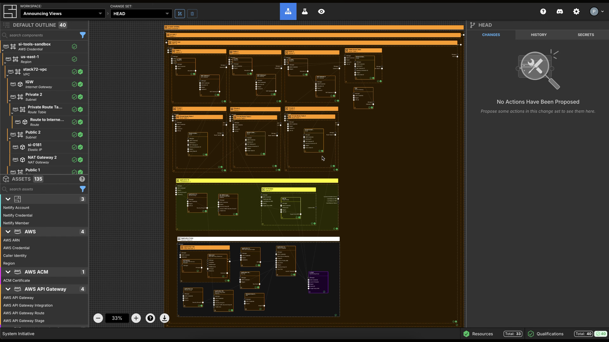
Users draged components to the canva do compose their infrastructures, leading to many usability challanges. The original UI was essential to the learnings that let to the changes. Primarly, the configure-by-clicking iteraction was core to the product concept.
Create an interface where users feel they have control over their own infrastructure and that leverages developer experience patterns.
Editing individual pieces and seeing the impact of the changes on the whole, and having a text-editor like experience to do so would better ressonate with infrastructure engineers.
System Initiative’s platform was re-lauched with four core experiences: the map, the grid, the component page and the review flow.
The map and the grid represented the whole infrastructure. The map was a visual representation of all the relationships.
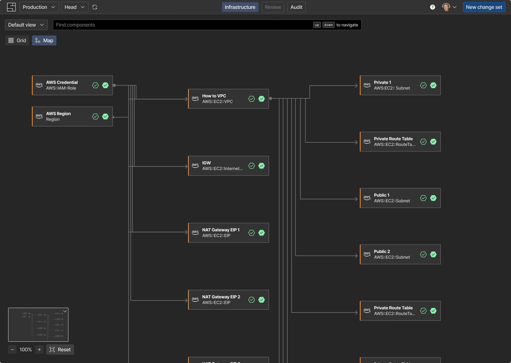
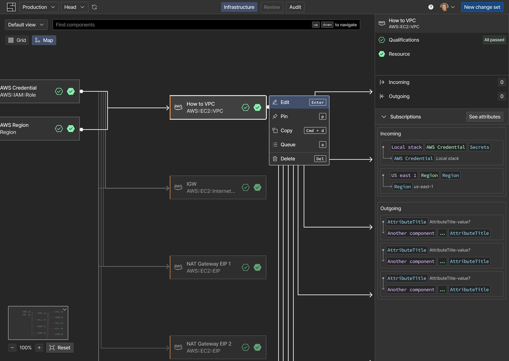

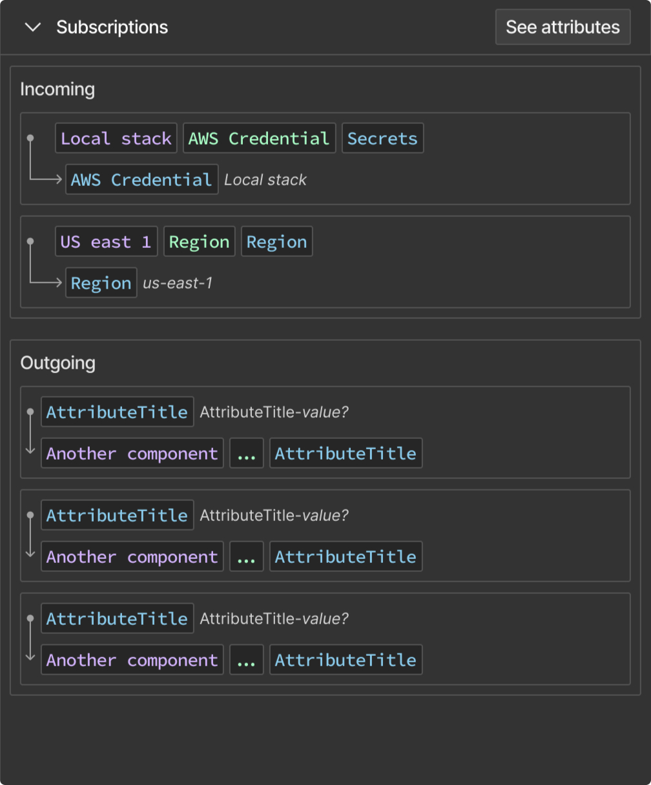
The preview was a product itself. It should run speed checks on the version — both developers and business users would see the same information.
After a six-weeks collaborative process with product and engineering, where we would paralellize the process, working with low- or high-fidelity prototypes -- sensitive to our goals.
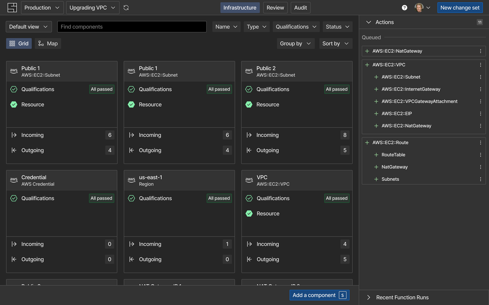
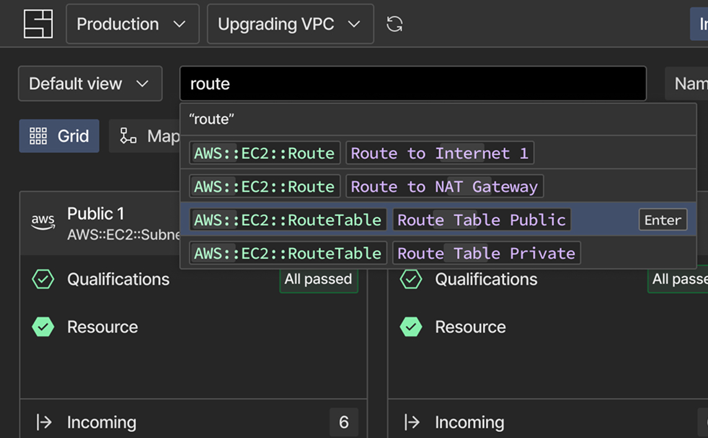
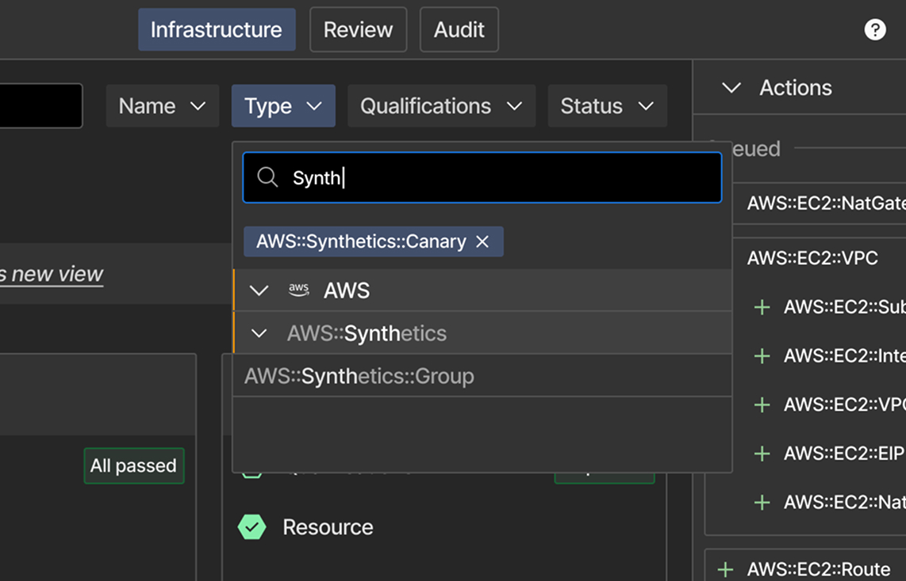
The search bar suggests components by key words.
Filters could get complex: hierarchy and navigation were a must-have.
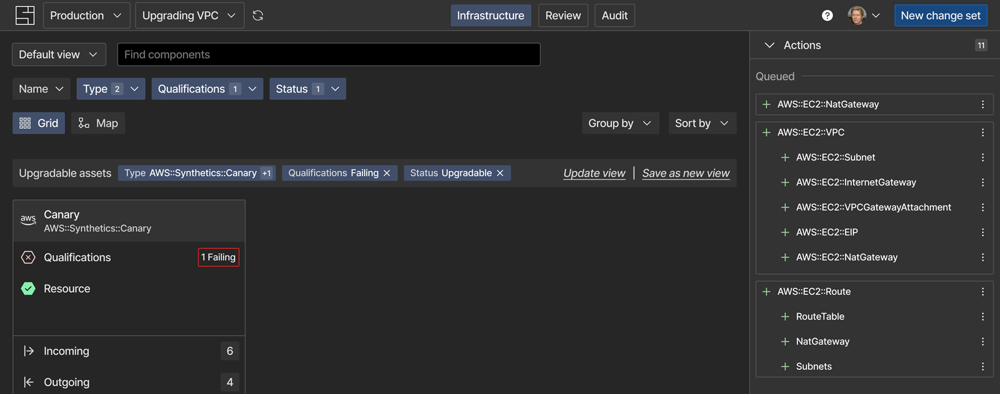
The active filters bar shows all filters as controlable components.
All component properties can be edited here. Is also centralize information, like details about the verifications and other meta data.

When working with AI, one of prospects’ biggest concerns was having control over what changed and clarity to review it.
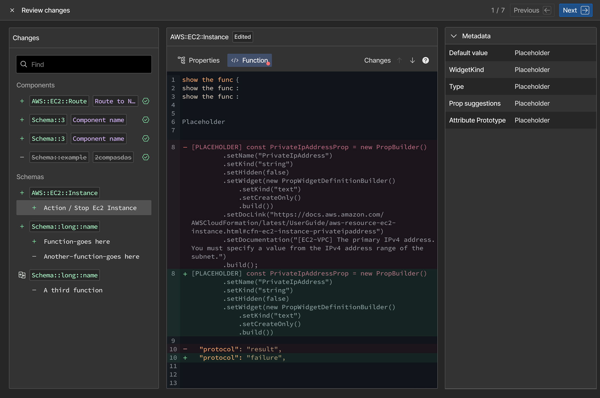
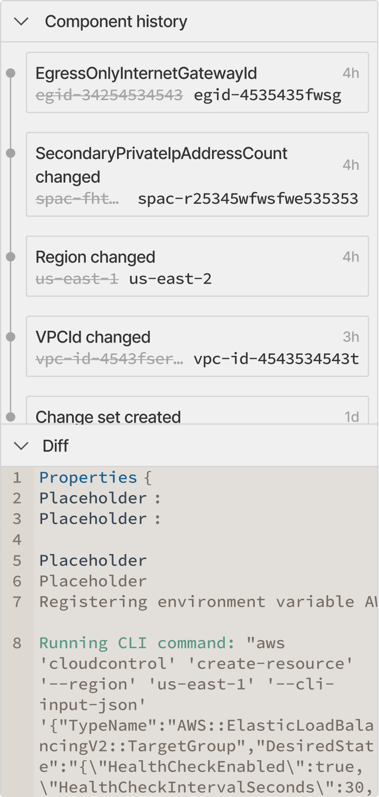
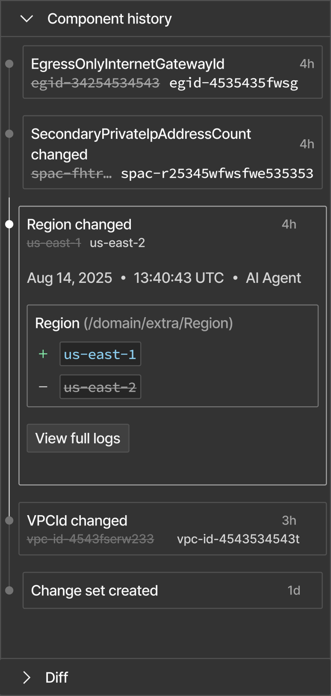
The relaunch achieved a 30% retention rate, with 50% of new signed up users using the product at least for two days. Adoption of a larger audience was still an ongoing goal
After observing real-world usage, I developed a new hypothesis: the web UI would be primarily a review-and-verify experience, with editing as secondary
I planned a redesign merging the review and component details, rethinking the map visualization, and adding other views for faster scanning.
"Review" should be a first-class citizen
Among other changes, SI launched an AI Agent and a CLI. The component page could centralize everything. Users would land on it, from the CLI, to see what changed.
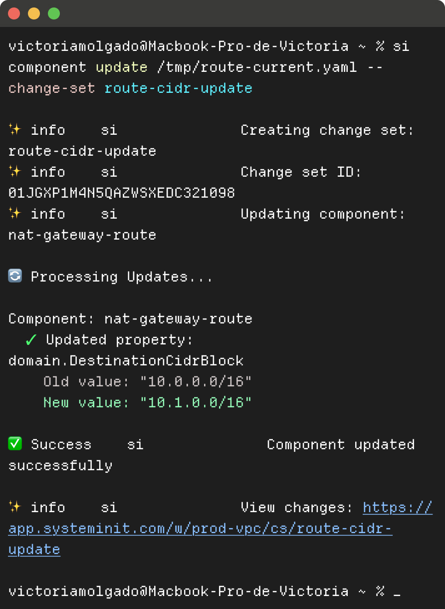
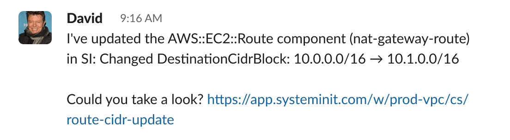
Engineers work from the CLI.
The page is sharable and contains everything users need.
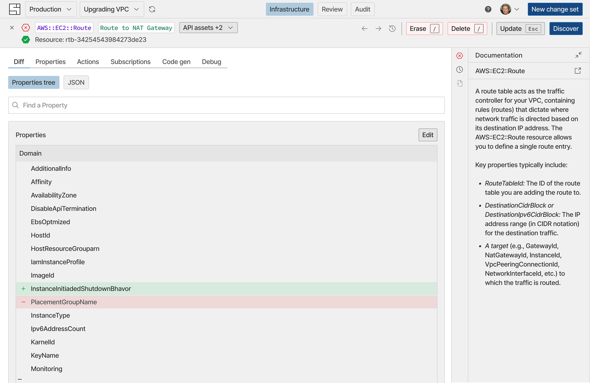
A representation of the possible changes, ready to be user tested.
The map should be easier to navigate
Users had difficulty distinguishing between simulated infrastructure (change sets) and the live version (HEAD). The map needed to change. More specifically, the UI representing HEAD should differ visually from how we represent a change set (the simulated version of HEAD, like a branch in Git).
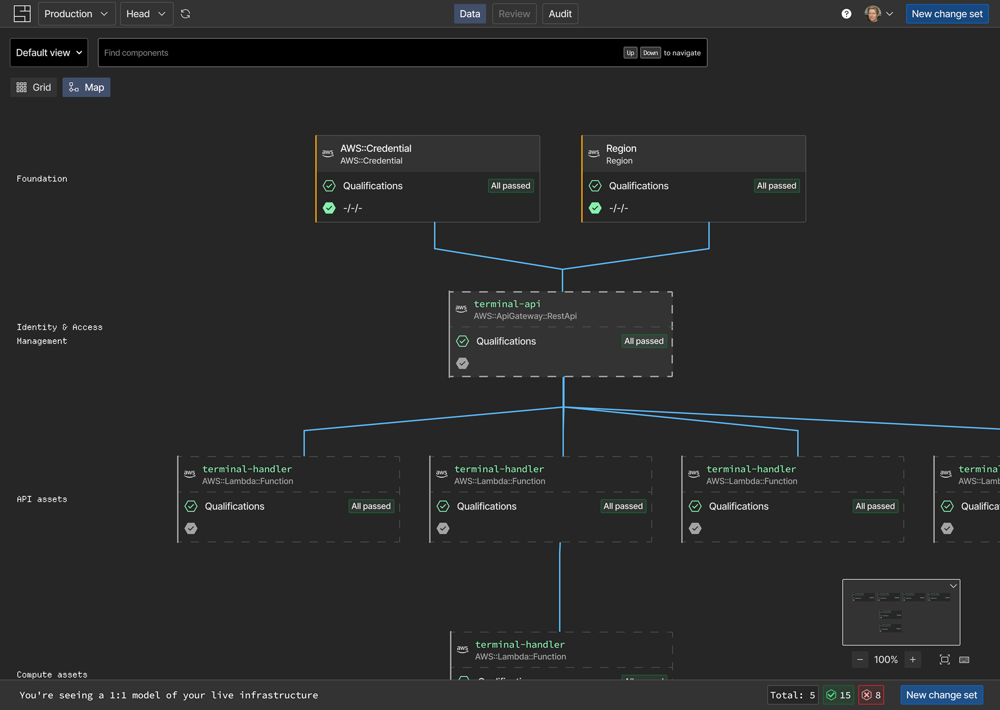
The map, grouped by categories that create navigation layers.
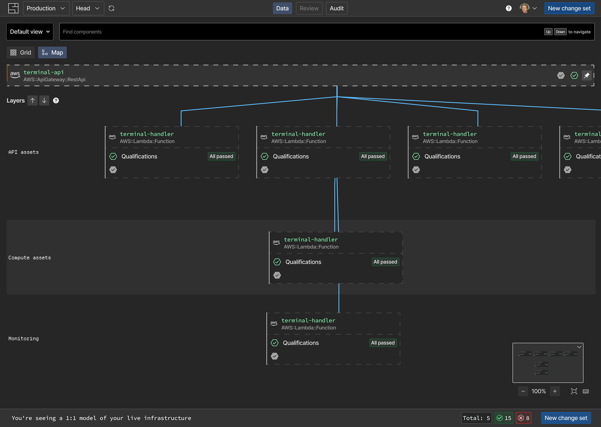
The map, grouped by categories that create navigation layers.
When designing SI, I focused on investigating how familiar visual patterns and flows could removed engineers' initial doubt and impact on adoption.
This required experimentation, tight feedback loops, and alignment with the company's leadership, making sure we had the right balance between functional and deliverable in the short timeline we had.
The retention and sign-up numbers failed to convert into adoption. The changes I planed aimed to move the user experience closer to a more traditional developer experience user flow, and continue giving us guidance on how to better integrate into developers' routines—the next big challenge.
✢ ✢ ✢